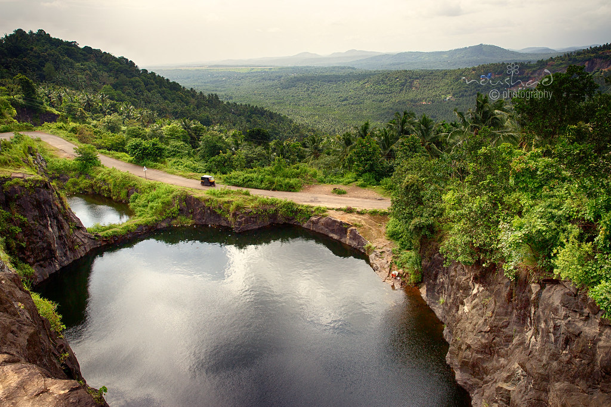
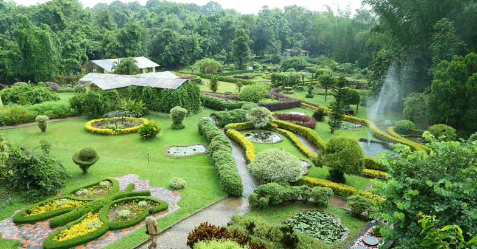

Mini Ooty
Arimbra Hills or Mini Ooty is a tourist spot between Malappuram and Kondotty in Malappuram district, Kerala, India. It is at a height of 445 meter above sea level.
The place attracts large number of visitors for its rolling hills and scenic views.
1 / 3

2 / 3

Nilambur Teak Museum
Teak Museum is located 4 km from Nilambur, a town in the Malappuram district of Kerala, South India. Teak occurs naturally in India with the main teak forests found in Kerala. It is considered to be the first of its kind in the world and the only one in India.
Teak Museum is located 4 km from Nilambur, a town in the Malappuram district of Kerala, South India. Teak occurs naturally in India with the main teak forests found in Kerala. It is considered to be the first of its kind in the world and the only one in India.
3 / 3

Nedumkayam Rainforest
Nedumkayam Rainforest is part of the Nilgiri Biosphere Reserve and is one of the numerous reasons to visit Malappuram. Around 15 km from Nilambur, it is loved by all who visit for the dense forest and lush greenery on display. People rave about the fresh air and clear water that flows through, along with rare species of flora and fauna. Nedumkayam is ideal for trekking. A 3-hour trek will take you to Mundakadav waterfalls.
Nedumkayam Rainforest is part of the Nilgiri Biosphere Reserve and is one of the numerous reasons to visit Malappuram. Around 15 km from Nilambur, it is loved by all who visit for the dense forest and lush greenery on display. People rave about the fresh air and clear water that flows through, along with rare species of flora and fauna. Nedumkayam is ideal for trekking. A 3-hour trek will take you to Mundakadav waterfalls.